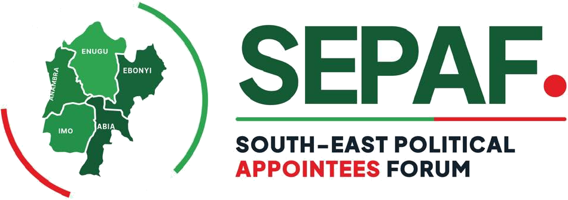
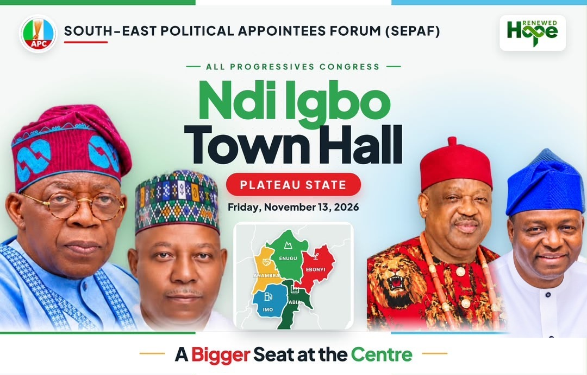

UN
Uzoma Nwagba
MD/CEO
CREDICORP
Consumer credit
Institutional reference ↗
Submit EvidenceSouth-East Nigeria · Public information platform
Explore documented federal programmes, infrastructure projects, presidential appointments and stakeholder engagement across Abia, Anambra, Ebonyi, Enugu and Imo.
Public service leadership
An initial working directory of officials and agency leaders. Please confirm current office, appointment status and state of origin before publishing as an authoritative register.
MD/CEO
CREDICORP
Consumer credit
Institutional reference ↗MD/CEO
South East Development Commission (SEDC)
Regional development
Institutional reference ↗MD/CEO
Ministry of Finance Incorporated (MOFI)
Federal investments
Institutional reference ↗MD/CEO
Niger Delta Power Holding Company (NDPHC)
Power and energy
Minister of Works
Federal Ministry of Works
Infrastructure
Minister of Foreign Affairs (as recorded in source)
Ministry of Foreign Affairs
Diplomacy
Minister of State, Budget and National Planning (as recorded in source)
Federal Ministry of Budget and Economic Planning
Economic planning
Board Chairman
SEDC
Regional development
Institutional reference ↗Executive Director, Finance
SEDC
Regional development
Institutional reference ↗Executive Director, Corporate Services
SEDC
Regional development
Institutional reference ↗Executive Director, Projects
SEDC
Regional development
Institutional reference ↗Executive Director, Commercial & Industrial Development
SEDC
Regional development
Institutional reference ↗Regional coverage
Choose a state to filter the Evidence Bank and review relevant projects and programmes.
Inclusive dialogue across communities
SEPAF's stakeholder engagement programme brings together voices from across the South-East and the wider Igbo community. Through interactive town halls and consultations, participants can raise priorities, ask questions, examine documented government interventions and propose areas for further action.
The groups below are proposed engagement categories; listing a category does not imply that its leaders have confirmed participation.
Faith communities and religious institutions.
Traditional institutions and community leadership.
Cultural organisations, respected elders and community voices.
Entrepreneurs, investors, employers and industry representatives.
Market unions, traders’ associations and commerce networks.
Igbo community leaders and associations based elsewhere in Nigeria.
Women-led organisations, community leaders and professional networks.
SUG presidents, NANS representatives, youth organisations and campus executives.
Professional associations, researchers, lecturers and university leadership.
Journalists, broadcasters, creative professionals and digital voices.
Igbo diaspora organisations and leaders based outside Nigeria.
Student leadership outreach
SEPAF has reached out to SUG presidents across the region. Invitations have been extended to Enugu and Ebonyi student leaders for a proposed Enugu town hall, and the NANS national leadership has expressed willingness to participate.

Build the evidence bank
Our mission
SEPAF brings together South-East federal political appointees to encourage public engagement, communicate verified government initiatives and connect citizens with institutions.
Project records with dates, sources and clear distinctions between completed, ongoing, approved and announced initiatives.
Find leaders, their federal institutions and public reference links. Profiles are subject to periodic verification.
Town halls, listening sessions and engagement with students, professional groups and other stakeholders.
02 / THE IMPACT
Scale at a glance. Select any figure to open the evidence behind it.
Research and documentation
Search the supplied development record by keyword, state, sector and implementation status. Open each entry to inspect its cited sources.
Try a broader term or clear the filters.
04 / IN THEIR WORDS
05 / METHODOLOGY